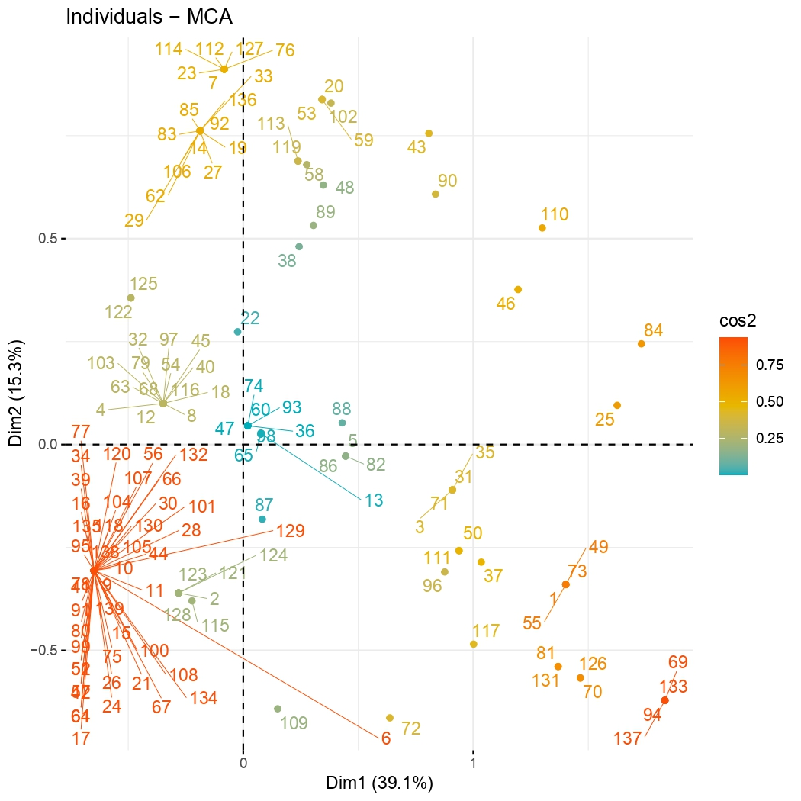
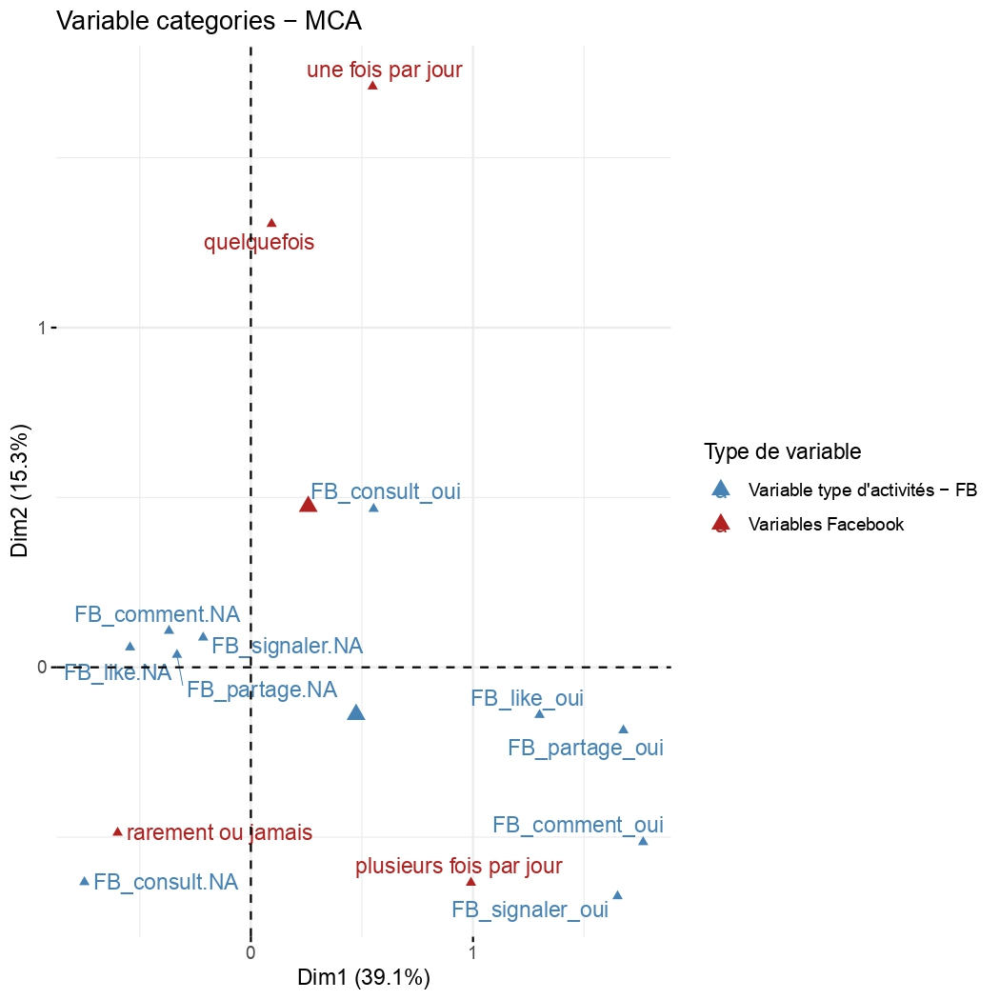

Collecte et analyse de données issues des réseaux sociaux : Stage au sein du projet AMULEX.
1. Objectif du projet

Ce projet a été réalisée dans le cadre d'un Datathon que j'ai organisé durant la semaine du 08/12/2025.
L’objectif principal était de monter en compétence sur des outils de Business Intelligence et d'analyse de données, notamment SQL pour la gestion et l'exploration, ainsi que Tableau pour la conception de visualisations professionnelles.
L'étude se concentre sur les facteurs ayant influencé la survie des passagers du Titanic afin d'identifier précisément les profils les plus à risque.
Objectifs d'apprentissage :
- 🔹 SQL : Gestion, exploration et analyse approfondie des données.
- 🔹 Tableau : Conception de visualisations dynamiques et professionnelles.
2. Présentation des données
L'étude repose sur la base de données passengers (tiré du jeu de données Titanic), regroupant des informations sur 714 passagers. Ces données ont été extraites et explorées à l'aide de SQL afin de structurer les variables clés nécessaires à l'analyse de survie et à la création de visualisations sous Tableau.
Le jeu de données se décompose en plusieurs catégories de variables essentielles :
-
Identité et profil (individus) :
Name, Sex et Age.
-
Statut socio-économique :
Pclass (classe de 1 à 3) et Fare (prix du billet). Ces données permetttent de mesurer l'influence de la richesse sur les chances de survie.
-
Structure familiale :
SibSp (frères, sœurs, époux) et Parch (parents, enfants). Ces variables ont été fusionnées en SQL pour créer l'indicateur "Statut de voyage" (Seul.e vs En famille).
-
Port d'embarquement :
Embarked (port d'embarquement).
-
Survie :
Survived (indicateur binaire de survie) constitue la variable cible de toute l'analyse statistique.
Chaque variable a été exploitée pour comprendre la corrélation entre le statut social et les chances de survie.
3. Nettoyage et préparation des données
Le nettoyage et la structuration des données ont été intégralement réalisés en SQL. Cette étape de Data Preparation a été cruciale pour transformer la base brute en un jeu de données exploitable pour l'analyse statistique et la visualisation :
- Ingénierie de variables (Feature Engineering) : Pour affiner l'analyse, j'ai créé de nouvelles dimensions via des instructions
CASE WHEN :
- Statut de voyage : Regroupement des passagers en catégories 'Seul.e' ou 'En famille' en calculant la somme des proches à bord
WHEN (SibSp + Parch) = 0 THEN 'Seul' ELSE 'En famille'.
- Segmentation démographique : Création de tranches d'âge (ex: 'Moins de 18 ans', '18-35 ans', etc.).
- Segmentation tarifaire : Définition de catégories de billets (Bas, Milieu et Haut de gamme) basée sur le calcul des quartiles (Q1=8.05, Q3=33.0) pour isoler l'impact du niveau de richesse.
4. Stratégies de collecte

La collecte des données a été menée par vagues accompagnée d'une adaptation constante afin de surmonter les défis méthodologiques et techniques spécifiques à chaque plateforme, tout en s'assurant du strict respect du Règlement Général sur la Protection des Données (RGPD).
- Objectif : Contacter le plus de commentateurs.
- Suivi : Utilisation d'un fichier Excel (seulement accessible par les membres de l'équipe) pour suivre les tentatives de contact.
- Difficultés : Le principal obstacle a été le filtrage des messages par Instagram ("utilisateur qui restreint les nouveaux messages"), limitant l'efficacité des relances.
- Problème : YouTube ne dispose pas d'une messagerie privée pour le contact direct et ne permet le tag que de 100 comptes par jour.
- Solution : Création d'une chaîne YouTube dédiée avec une vidéo explicative, et contact des enquêté.e.s par tag sous le post de la vidéo par tranche de 100, suivi des relances sur Instagram. Par la suite ces tags ont été supprimés afin de respecter la confidentialité des enquêté.e.s.
5.1. Statistiques descriptives
-
Objectif : Cartographier la population enquêtée.
Les statistiques descriptives constituent la première étape de l'analyse. Elles ont permis de décrire les principales caractéristiques sociodémographiques des informations collectées avant de se lancer dans des analyses plus complexes.
-
Méthodologie : Statistiques descriptives sur Jamovi.
Utilisation du logiciel Jamovi pour générer des statistiques descriptives univariées (moyennes, écarts-types).
-
Contribution à l'enquête : Profil type de l'échantillon.
L'échantillon final sur lequel porte cette analyse est constitué de 177 répondants. Dans le cadre du projet, ces statistiques descriptives ont servi à poser un profil type des commentateurs en les comparant selon les plateformes de
commentaires : X et Instagram, YouTube (échantillon aléatoire + gros commentateurs) et finalement Twitch.
Ainsi, l'objectif est d'analyser la distribution des variables sociodémographiques
(âge, genre, CSP, niveau de diplôme) pour obtenir une vue d'ensemble de l'échantillon de commentateurs.
Profil sociodémographique de l'échantillon global
- Genre : Très largement masculin, les hommes représentant environ 72% de l'échantillon.
- Âge : Un échantillon relativement jeune, avec une moyenne d'âge inférieure à 35 ans (moyenne d'année de naissance autour de 1989).
- Diplôme : Un niveau d'éducation élevé, avec une forte concentration de personnes très diplômées (Bac+4 et Bac+5).
- Orientation politique : Tendance politique fortement polarisée à gauche. Environ 70% des répondants se positionnent à gauche et à l'extrême-gauche sur l'échelle politique.
Ce profil met en lumière une population de commentateurs en ligne spécifique et différente de la population française générale.
5.2. Analyse des Correspondances Multiples (ACM)
-
Objectif : Visualiser la relation entre plusieurs variables et les individus qui y sont associés.
Elle permet de représenter sur un graphique les liens entre les différentes modalités de réponse, ainsi que la proximité entre les individus qui partagent des profils de réponse similaires. L'ACM a été employée pour définir les profils
des enquêté.e.s. En projetant sur un graphique les liens entre la fréquence d'utilisation de chaque plateforme et les types de comptes suivis, cette analyse permet d'identifier des groupes d'individus (chaque point sur le graphique représente
un.e enquêté.e) ayant des pratiques numériques similaires. Cette méthode permet de révéler la diversité des profils d'utilisateurs et de s'assurer que l'échantillon recueilli représente un large éventail de comportements en ligne.
-
Méthodologie : ACM sur R.
Le travail a été effectué à l'aide du package FactoMineR sous R. Les données ont été préparées en sélectionnant les variables pertinentes pour l'analyse, ici la fréquence d'utilisation et les types
de comptes suivis sur la plateforme. Après avoir exécuté le script, l'ACM génère deux graphiques principaux : le graphique des individus (qui montre le positionnement de chaque enquêté.e) et le graphique des
variables (qui visualise les liens entre les différentes catégories de réponses).
-
Contribution à l'enquête : Ciblage des profils et diversification de l'échantillon qualitatif.
L'identification de ces groupes a permis de guider la sélection des individus à recontacter pour la phase d'entretiens. En localisant les individus proches des pratiques d'engagement les plus extrêmes ou les plus
diversifiées (ex: l'individu 126, très actif car proche des variables de fréquence élevée ("Plusieurs fois par jour") et de pratiques ("Partage", "Comment"...), l'ACM assure que l'échantillon couvre un large éventail de comportements en ligne.


5.3. Analyse en Classes Latentes (ACL)
-
Objectif : Découvrir des groupes d'usagers aux profils similaires (classes latentes).
S’appuyant sur les profils établis par les statistiques descriptives, l’ACL est une méthode statistique utilisée pour découvrir des groupes cachés (ou « latents ») d’individus à partir de leurs réponses à un ensemble de variables. Elle permet de segmenter les répondants pour identifier des profils typiques d’usagers des réseaux sociaux et de la politique en ligne (très actifs sur plusieurs plateformes, discrets, ou engagés sur une seule plateforme).
-
Méthodologie : ACL sur Jamovi.
L’analyse a été réalisée sur le logiciel Jamovi, en utilisant le module snowRMM. Les données issues du questionnaire ont été transformées en variables ordinales. Pour déterminer le nombre optimal de classes, l’analyse s’est basée sur le critère du BIC (Bayesian Information Criterion), en retenant le modèle présentant la valeur la plus basse, ce qui garantit la meilleure adéquation statistique (le modèle à 2 classes a été retenu).
-
Contribution à l'enquête : Segmentation des usagers et corrélation sociodémographique.
L’ACL a permis d'identifier des groupes distincts d’individus basés sur la fréquence d’utilisation de différentes plateformes. Ces différences de genre, de CSP, de statut professionnel et d’orientation politique confirment que les pratiques en ligne sont étroitement liées à des facteurs sociodémographiques, renforçant l’idée que l’idée que l’engagement numérique est structuré par des dynamiques sociales.
Synthèse des 2 classes d'utilisateurs identifiées par l'ACL
Les chiffres 1 à 4 représentent la fréquence d’utilisation des plateformes (1 = usage le plus fréquent).
- Classe 1 : Les « hyper-actifs » (17.7% de l'échantillon)
- Usage : Fréquence d’utilisation élevée (modalité 1, « plusieurs fois par jour ») sur toutes les plateformes (profil intensif et diversifié).
- Genre : Plus de femmes (48.15%) que d’hommes (37.04%).
- Âge : Moyenne de 36 ans (naissance 1989), avec une grande dispersion (Écart-type 19.2).
- Profil : Forte représentation des étudiants (29.63%) et des inactifs (51.85%).
- Politique : Surreprésentation de l’extrême gauche (22.22%) ou de la gauche (29.63%).
- Classe 2 : Les « sélectifs/occasionnels » (82.3% de l'échantillon)
- Usage : Fréquence bien plus faible, surtout sur Snapchat et Tiktok.
- Genre : Composée majoritairement d’hommes.
- Âge : Profil plus mature, moyenne de 38 ans (naissance 1987), avec une dispersion plus faible (Écart-type 14.6).
- Profil : Dominé par les cadres (36%) et les salariés stables (41.61%).
- Politique : La gauche est surreprésentée (41.45%).
5.4. Analyse de corrélation
-
Objectif : Quantifier la relation entre les usages de différentes plateformes.
L’analyse de corrélation statistique a servi à mesurer le lien entre deux variables et à déterminer si l’utilisation d’une plateforme (comme Snapchat) est associée à l’utilisation d’une autre (comme Tiktok).
-
Méthodologie : Corrélation statistique sur Jamovi.
Le coefficient de Tau de Kendall B, une mesure de corrélation non paramétrique, a été utilisé pour évaluer la force et la direction de ces relations. Un Tau > 0 indique une association positive, et un Tau < 0 une association négative.
-
Contribution à l'enquête : Mise en évidence d'écosystèmes d'usages spécifiques.
Les résultats ont permis de structurer les pratiques numériques observées en ligne, démontrant qu'elles ne sont pas isolées mais s’organisent en écosystèmes d’usages propres à des typologies d’individus. Le tableau ci-dessous présente le Tau de Kendall B avec la p-value associée entre parenthèses.
| Plateforme |
Indicateur |
Facebook |
Youtube |
Instagram |
X |
Twitch |
Snapchat |
Tiktok |
Linkedin |
Messagerie |
| Facebook |
Tau de Kendall B |
— |
|
|
|
|
|
|
|
|
| p-value |
— |
|
|
|
|
|
|
|
|
| Youtube |
Tau de Kendall B |
-0.080 |
— |
|
|
|
|
|
|
|
| p-value |
0.199 |
— |
|
|
|
|
|
|
|
| Instagram |
Tau de Kendall B |
0.101 |
0.038 |
— |
|
|
|
|
|
|
| p-value |
0.100 |
0.542 |
— |
|
|
|
|
|
|
| X |
Tau de Kendall B |
0.137 |
0.043 |
0.079 |
— |
|
|
|
|
|
| p-value |
0.025 |
0.489 |
0.197 |
— |
|
|
|
|
|
| Twitch |
Tau de Kendall B |
-0.147 |
0.233 |
-0.123 |
0.003 |
— |
|
|
|
|
| p-value |
0.015 |
< .001 |
0.040 |
0.966 |
— |
|
|
|
|
| Snapchat |
Tau de Kendall B |
-0.010 |
-0.032 |
0.262 |
0.027 |
-0.170 |
— |
|
|
|
| p-value |
0.875 |
0.627 |
< .001 |
0.673 |
0.007 |
— |
|
|
|
| Tiktok |
Tau de Kendall B |
0.008 |
-0.091 |
0.234 |
0.185 |
-0.123 |
0.329 |
— |
|
|
| p-value |
0.904 |
0.158 |
< .001 |
0.004 |
0.049 |
< .001 |
— |
|
|
| Linkedin |
Tau de Kendall B |
0.108 |
0.024 |
0.078 |
0.132 |
-0.012 |
0.123 |
0.081 |
— |
|
| p-value |
0.085 |
0.702 |
0.207 |
0.033 |
0.842 |
0.057 |
0.213 |
— |
|
| Messagerie |
Tau de Kendall B |
0.208 |
0.021 |
0.144 |
0.063 |
-0.004 |
-0.068 |
-0.067 |
0.171 |
— |
| p-value |
< .001 |
0.737 |
0.019 |
0.303 |
0.942 |
0.289 |
0.295 |
0.006 |
— |
Légende de la corrélation (Tau de Kendall B) :
Rouge : |τb| > 0.3 (Forte)
Orange : 0.2 ≤ |τb| ≤ 0.3 (Modérée)
Jaune : |τb| < 0.2 (Faible)
Légende de la signification (p-value) :
Vert : p-value < 0.05 (Significative)
Synthèse des écosystèmes d'usage (Corrélations significatives, p < 0.05)
L'analyse des corrélations de Kendall met en évidence des regroupements d'usages entre les différentes plateformes, révélant l'existence de "familles" d'utilisateurs.
Corrélation positives, portant alors des usages similaires
Snapchat et TikTok : La corrélation la plus forte confirme un chevauchement massif d'un public jeune.
YouTube et Twitch : Cette association révèle des utilisateurs assidus de contenus vidéo et de direct.
Corrélation négatives révélant des audiences distinctes
Twitch et Facebook : Suggère que les utilisateurs de Facebook (souvent plus âgés) sont moins présents sur la plateforme de vidéo en direct (public plus jeune).
Twitch et Snapchat/Instagram : Montre un clivage clair entre les publics adeptes du contenu éphémère et visuel et ceux de la plateforme spécialisée dans le jeu vidéo et le direct.
6. Conclusion
-
Apports scientifiques et interprétation
Les analyses menées dans le cadre du projet AMULEX corroborent et enrichissent les travaux sociologiques majeurs sur la diversification des usages numériques (Pacouret et al., 2024 ; Neihouser et al., 2022).
L'Analyse en Classes Latentes (ACL) a permis d'établir une typologie claire des utilisateurs, révélant notamment l'existence d'un petit groupe multiplateforme très actif, jeune, diplômé et politiquement engagé à gauche. L'ACM et les corrélations ont quant à elles démontré l'existence d'« écosystèmes d'usages » distincts : l'association forte entre Snapchat et TikTok (public jeune) d'un côté, et celle entre YouTube et Twitch (public vidéo assidu) de l'autre. Ces résultats confirment que les pratiques numériques sont le reflet direct de variables sociodémographiques.
-
Nuances et limites du projet
L'étude a fait face à plusieurs limites : un biais de recrutement ayant surreprésenté les profils très actifs et des contraintes techniques liés aux plateformes (Instagram, YouTube) qui ont orienté les choix méthodologiques.
-
Bilan du stage
Ce stage a été une transition concrète de la théorie à la pratique. Malgré les obstacles, mon travail de conception et de traitement a permis de créer une base de données solide pour le projet. Cette expérience a confirmé mon intérêt pour l'analyse de données sociologiques et m'a appris l'importance de la flexibilité face aux imprévus.
7. Compétences développées
- Compétences analytiques : Expertise dans l'application de l'ACL, l'ACM et des corrélations pour structurer et interpréter des données sociologiques complexes.
- Maîtrise de R : Conception d'un script R fonctionnel pour l'ACM.
- Maîtrise de Jamovi : Utilisation de Jamovi pour les statistiques descriptives, l'ACL et l'analyse de corrélation.
- Gestion de données complexes et structuration de BDD : Traitement et nettoyage de données qualitatives et quantitatives pour garantir la solidité et la pérennité de la base de données du projet AMULEX.
- Conception et adaptation de protocoles de collecte : Élaboration d'une stratégie de recrutement spécifique à YouTube et ajustement des méthodes face aux contraintes techniques des plateformes.
- Interprétation sociologique : Capacité à mettre en perspective les résultats statistiques avec les travaux théoriques pour enrichir les conclusions de l'étude.

{kind=link}
{kind=link}
{kind=link}